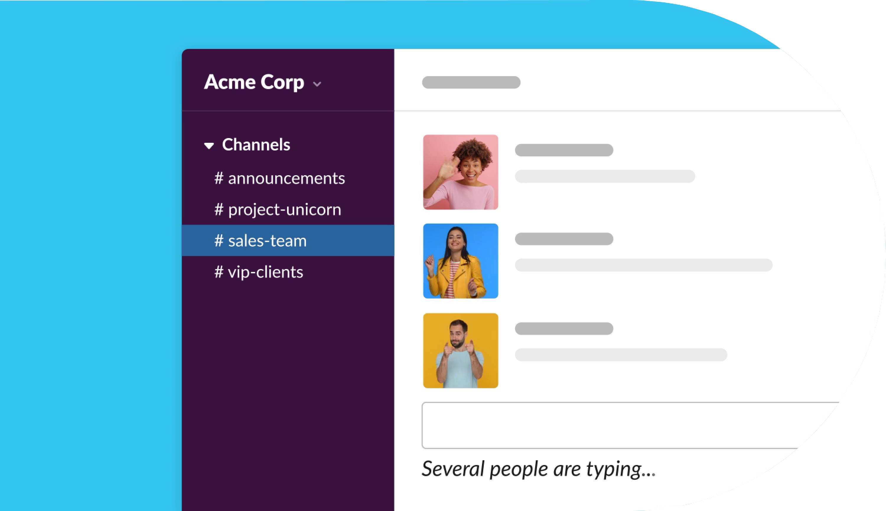
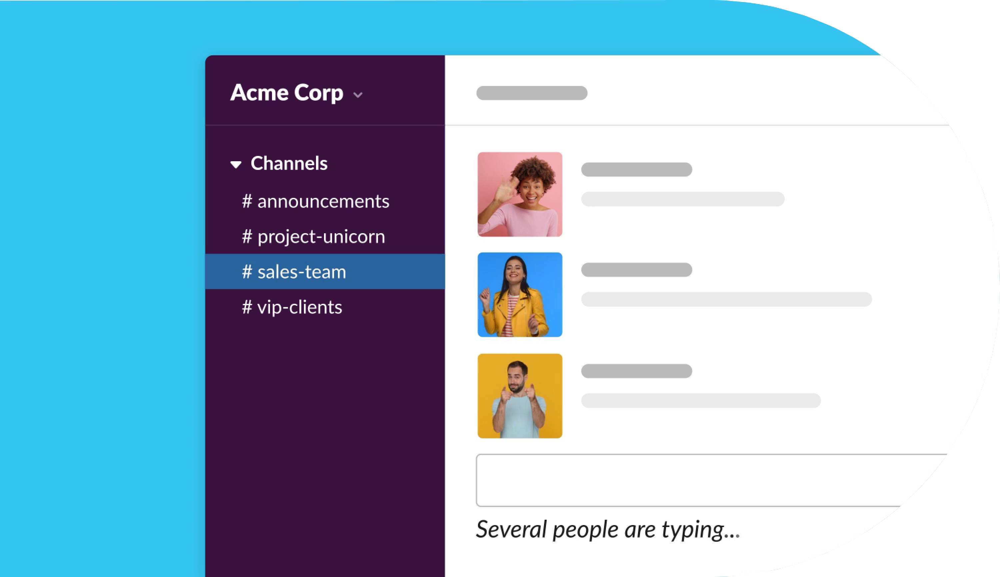
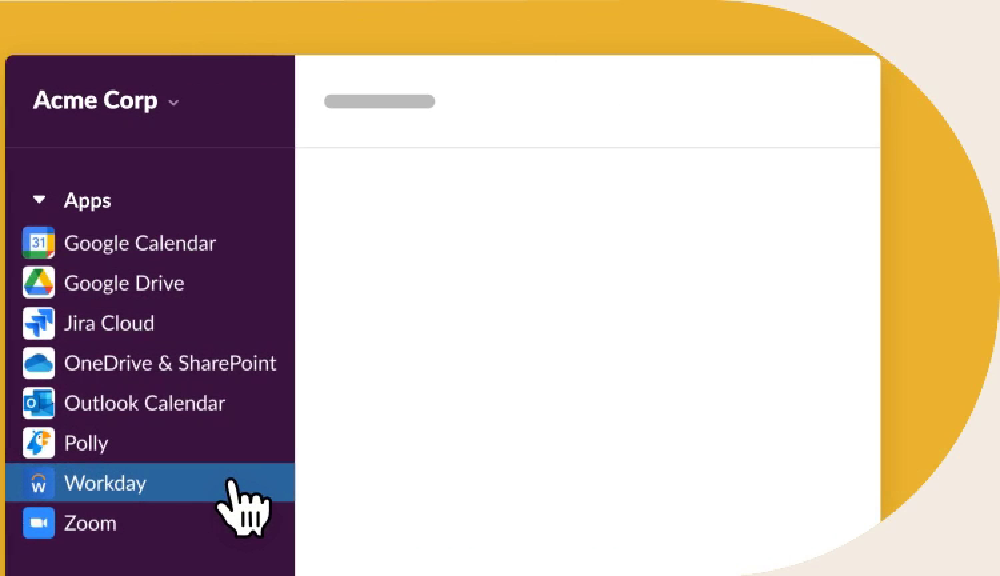
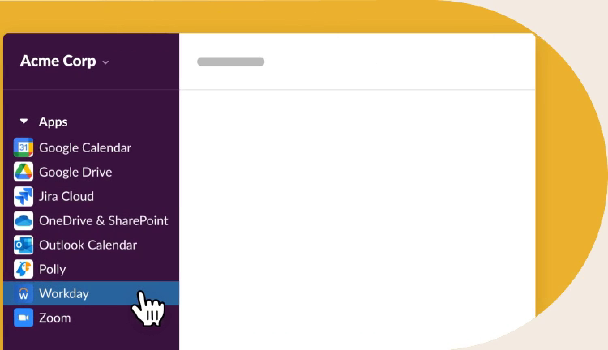

Trusted by companies all over the world
 

Bring your team together
At the heart of Slack are channels: organized spaces for everyone and everything you need for work. In channels, it's easier to connect across departments, offices, time zones and even other companies.
Learn more about channelsChoose how you want to work
In Slack, you’ve got all the flexibility to work when, where and how it’s best for you. You can easily chat, send audio and video clips, or hop on a huddle to talk things out live.
Learn more about flexible communication

 

Move faster with your tools in one place
With your other work apps connected to Slack, you can work faster by switching tabs less. And with powerful tools like Workflow Builder, you can automate away routine tasks.
Learn more about the Slack platformTeams large and small rely on Slack
Slack securely scales up to support collaboration at the world’s biggest companies.
-
85%
of users say Slack has improved communication*
-
86%
feel their ability to work remotely has improved has improved*
-
88%
feel more connected to their teams*